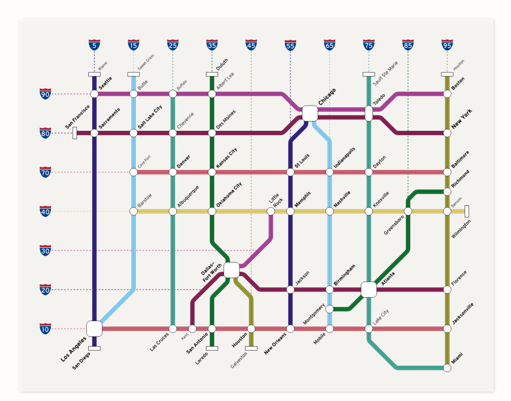

Can you find the route?
Use the map to choose the interstate route that connects each pair of cities.
Route challenge
Question 1 of 8
0%
Starting citySeattle
DestinationSan Diego
Which route best matches the map?
Highway reference map
Keep the network in view while you answer.

This is a schematic learning map, not a turn-by-turn navigation map. Routes are based on the connections shown here.